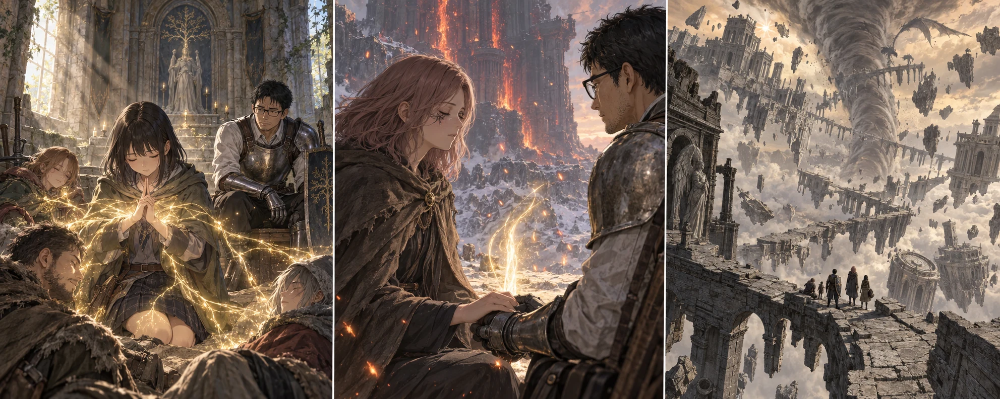

DAY83 / TURN1−93
その手を、覚えている。

葵「明日も、六人ずつなら支えられます」
【DAY83｜手の届く朝】葵は、昨夜から机の端に置いていた紙を開いた。足りない十一段階。必要な千七百二十ルーン。昨日までは遠い数字だったものが、今朝は使える予算の中に収まっていた。先生は全員へ配分を示した。自分は六十から七十へ。葵は四十九から六十へ。他の十一人は四十五から五十四へ。勝った者への褒美というより、次に一人も取り残さないための配り方だった。
力が身体になじんだ後、葵は祝福のそばで膝をついた。今度は、祈りを途中で支えきれなくなる感覚が来なかった。足元に細い黄金の枝がほどけ、近くにいる者へ静かに届く。「これが……」。言いかけた声が震えた。大きな光の弾が飛ぶわけではない。誰かが傷ついた時、離れていては間に合わなかった手を、少し広く届かせられるようになった。
紬が、光の外へ一歩出て確かめる。離れた全員へ届く術ではなかった。「一度で皆を治せる、とは思わない方がいいですね」。葵は頷いた。黄金樹の恵みは、今の共有三回分から二回分を使う。近くの六人まで、九十秒ほどかけて回復を続ける。倒れた者を起こす力はない。それでも、傷ついた前衛が次の一撃を受ける前に戻れる時間を、今までより長く支えられる。
教会では矢が百本補充され、七つの武器と盾が手入れされた。直人は大竜爪の擦れた縁を撫でる。新品の別の武器になったわけではない。ここまで自分が握ってきた傷が、使い続けられる形に直っていた。花と千夏は矢を分け、主力は三日分の保存食を携行する。留守を預かる二十人にも、食事と水、交代の予定を残した。
【火の巨人の祝福から】昨日、自分たちで解放した場所へ戻り、休息を取った。葵は朝の実演に使った力を補充する。雪原にはもう巨人の立つ姿がない。その不在を横切り、釜へ続く鎖を進む。十三人が足元を確かめながら巨大な縁を回った。遠くから見た建物のようなものが、近づけば一つの器だった。中を覗いた蓮が、すぐに目を戻した。
【巨人の火の釜】祝福を解放した先生の前に、メリナが姿を見せた。いつもなら、次へ進むために話を聞くところだった。今回は先生の方が先に口を開いた。「ここで、あなたは」。続きを言えなかった。先読みで知った手順を、本人の前でただ説明することができなかった。
「あなたは、ここへ来るために、いくつものものを守ってきたのね」。メリナは十二人へ目を向け、それから先生を見た。「私にも、私が進む理由がある」。先生は助ける方法を知らないのではなかった。知らない土地を回り、いくつもの条件を満たし、間違えれば世界そのものを焼く力に触れる。その道があるという知識と、今から皆を連れて辿りきれるという見通しは、違っていた。
「時間がない、で済ませたくはないんだ」。先生が言うと、メリナはすぐには答えなかった。風が彼女の外套を持ち上げる。「私を、あなたの生徒と同じように引き留めなくてもいい」。責める声ではなかった。「私がここまで来たことも、私の選んだこととして覚えていて」。先生はその顔から目を逸らさず、ようやく頷いた。
葵は自分の聖印を握っていた。昨日まで届かなかった祈祷に、今朝、手が届いたばかりだ。それでも今、この人を留める力にはならない。信仰の数字をもう一つ上げれば解決することではなかった。「忘れません」と言ったのは、紬だった。先生だけが別れを告げるのを、見ているだけにはしたくなかった。
メリナが先生の手を取った。触れた手に熱さはなく、それがかえって怖かった。瞼が重くなる。自分が眠ってしまえば、彼女が歩いてゆくところを見届けられない。先生は最後まで目を開けていようとした。遠くで誰かが先生を呼び、その声も柔らかく沈んだ。
【燃える黄金】眠りの底で、巨大な枝へ火が移ってゆくのが見えた。道が開く。そう書けば、一行で終わる出来事だった。その一行の向こうに、一人の選択がある。先生は何かを言おうとし、言葉になる前に景色を失った。
【崩れゆくファルム・アズラ】頬に当たるものが、雪ではなく砂へ変わっていた。先生は石の上で身を起こした。空に塔が浮いている。砕けた橋が落ちずに留まり、その向こうで竜巻が、海にも山にも見えないものを巻き上げている。「数えて！」。返ってくる名前を聞きながら、先生も立った。釜のそばにいた十三人だけが、ここにいた。メリナの返事はなかった。
これは、登録した祝福へ戻ったのではない。釜で起きた一度の転送に、現地の十三人が巻き込まれたのだ。教会の二十人を呼ぶ手段にはならない。そして今の自分たちも、まだここから帰れない。先読みの頁を開いた先生は、最初の祝福に辿り着くまで移動が使えないことを、もう一度皆へ伝えた。「まず足場をつなぐ。脇の宝を取りにいかない」
【初路の獣人｜2d6＝3・2＋4＝9】通路の影が、二つに分かれて動いた。獣の頭をした兵が、石の縁を踏んで跳び込んでくる。陽太は槍を出しながら盾を寄せた。刃は防げても、狭い床で後ろへ押された肩が壁に擦れる。「右、もう一体！」。痛みに息を詰めたまま叫ぶ。先生が前へ出て二体目を受け、陸の大剣と後ろからの矢が、一体ずつ動きを止めた。
「腕は動く。赤、一本使います」。陽太は傷を隠さなかった。昨日、無傷で巨人を倒した身体にも、普通の敵の刃は届く。瓶を飲む間、蓮が槍の列を受け持つ。隊全体を教会へ戻すことも、一人を置いて先へ行くこともできない場所で、入れ替わる手順が皆の足をつないだ。
【最深地点を登録】祝福「崩れゆく獣墓」に辿り着いた時、先生は誰も欠けていないことを確かめてから解放した。十三人が順に登録し、休息を取る。陽太の傷も落ち着いた。帰るための道が、ここで初めてできた。今日はこの場所を再開地点にして夜を越す。回廊の外を大きな影が過ぎたが、それを追う者はいなかった。
同じ日、教会では翼たちが三頭分の獲物を持ち帰っていた。調達判定は六と三、補正を合わせて十三。空に起きた変化を見上げた結衣は、遠征の一人ひとりの名を思い浮かべた。それでも、こちらから確かめに走る指示は出さなかった。今日の鍋と水、明日の見張りを止めないことが、自分たちにできる仕事だった。
【DAY83｜夕】焚いた明かりの端で、先生は手を見ていた。メリナに取られた時の温度を、もう正確には思い出せない。先読みの頁なら次の敵を教えてくれる。でも、今の沈黙に何を言えばいいかは載っていなかった。葵が隣に座る。「先生。明日も、六人ずつなら支えられます」。先生は掌を閉じ、顔を上げた。燃やしただけでは終わらない。その先へ進むため、あと十六日を使う。
今回の判定記録
| 判定 | 出目 | 補正 | 合計 |
|---|
| farumArrival | 3+2 | 4 | 9 |
| base | 6+3 | 4 | 13 |
抽選前の条件 · 抽選結果